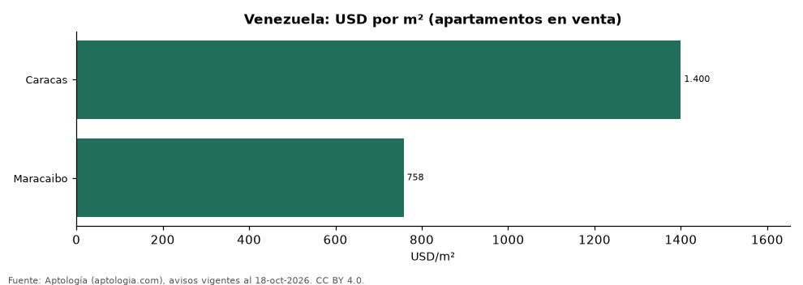

Vivienda en Venezuela por ciudad: precio por m², arriendo de 2 habitaciones y años de arriendo en 2 ciudades (octubre 2026)
Estudio con datos abiertos (CC BY 4.0). Versión original: https://github.com/elbroker/aptologia-datos/tree/main/estudios/vivienda-venezuela-por-ciudad-2026 · DOI: 10.5281/zenodo.23475863
El metro cuadrado de apartamento más caro de Venezuela está en Caracas, con USD 1.400 en la mediana de avisos en venta; el más barato de las 2 ciudades medidas, en Maracaibo, con USD 758. En Caracas, un apartamento de 2 habitaciones se arrienda por USD 950 al mes y se vende por USD 160.000: 14,0 años de arriendo.
Resumen: analizamos 1.946 avisos de apartamentos en 2 ciudades de Venezuela.
Actualizado: 18 de octubre de 2026 (datos del 18 de octubre de 2026) · Próxima actualización: mensual.

Resumen
| Indicador | Valor |
|---|---|
| Más caro (m²) | Caracas: USD 1.400 |
| Más barato (m²) | Maracaibo: USD 758 |
| Caracas: arriendo 2 hab. | USD 950 |
| Avisos | 1.946 |
Ciudades de Venezuela
| Ciudad | Venta USD/m² | Apto. 2 hab. en venta | Arriendo 2 hab. al mes | Años de arriendo | Moneda (venta / arriendo) | Avisos (venta / arriendo) |
|---|---|---|---|---|---|---|
| Caracas | USD 1.400 | USD 160.000 | USD 950 | 14,0 | USD / USD | 1.503 / 334 |
| Maracaibo | USD 758 | — | — | — | USD / USD | 67 / 42 |
Medianas de apartamentos; — indica menos de 30 avisos. Años de arriendo = precio de 2 habitaciones ÷ (arriendo de 2 habitaciones × 12); no se calcula en destinos de temporada.
Preguntas frecuentes
¿Cuál es la ciudad más cara de Venezuela para comprar? Caracas: USD 1.400 por m² en la mediana (octubre de 2026).
¿Cuánto cuesta arrendar en Caracas? Un apartamento de 2 habitaciones, USD 950 al mes en la mediana.
Metodología
- Fuente: exportes nocturnos de la base de datos de Aptología (aptologia.com) del 18 de octubre de 2026: avisos vigentes de vivienda en portales inmobiliarios de 13 países, recogidos por Aptología y vistos en línea entre el 11 y el 18 de octubre de 2026. Corte: 18 de octubre de 2026.
- Depuración: se eliminan duplicados exactos (misma ciudad, zona, tipo, precio, moneda, área, habitaciones y baños) y los precios fuera del percentil 1–99 de cada país, operación, moneda y tipo; el precio por m² usa solo avisos con área declarada entre 12 y 2.000 m² y también se recorta al P1–P99.
- Qué se mide: precios pedidos (publicados), no precios de cierre. En arriendo, el canon mensual sin administración, gastos comunes ni condominio.
- Muestra mínima: cada cifra publicada se apoya en al menos 30 avisos; las celdas con menos se omiten.
- Monedas: nunca se mezclan avisos de monedas distintas sin convertirlos. Conversión a dólares con la tasa de mercado de ExchangeRate-API (open.er-api.com, actualización del 18 Oct 2026): 1 USD = 3.182,80 COP, 1 USD = 18,47 M.N, 1 USD = 5,09 BRL, 1 USD = 3,44 PEN, 1 USD = 982,44 CLP, 1 USD = 1.514,57 ARS, 1 USD = 40,20 UYU, 1 USD = 5.705,37 PYG, 1 USD = 61,27 DOP, 1 USD = 0,89 EUR, 1 USD = 11,72 BOB; la UF chilena a 41.178,64 CLP (mindicador,cl. 18-oct-2026). Los avisos publicados en dólares se usan tal cual.
- Monedas: en cada ciudad y operación se usa solo la moneda mayoritaria de los avisos (los avisos en otra moneda se excluyen) y la mediana se convierte a dólares con la tasa citada; nunca se promedian avisos de monedas distintas.
- Destinos de temporada: Punta del Este, Maldonado y Punta Cana se excluyen de las comparaciones de años de arriendo porque muchos avisos de alquiler son de temporada (precio mensual de verano), lo que infla el canon y daría una relación artificialmente baja.
- Limitaciones: la cobertura depende de los portales que recorre Aptología en cada país y es mayor en las ciudades grandes y en los segmentos medio-alto y alto; el área es la que declara el aviso, sin verificar; los nombres de zona vienen de los portales.
- Privacidad: solo se publican agregados; no se publica ningún dato personal, enlace a avisos ni nombre de anunciante.
- Datos abiertos: datos.csv, licencia CC BY 4.0.
Cómo citar
Pinzón Pineda, D. M. (2026). Vivienda en Venezuela por ciudad: precio por m², arriendo de 2 habitaciones y años de arriendo en 2 ciudades (octubre 2026). Aptología (aptologia.com). https://github.com/elbroker/aptologia-datos/tree/main/estudios/vivienda-venezuela-por-ciudad-2026. Datos: datos.csv, licencia CC BY 4.0.